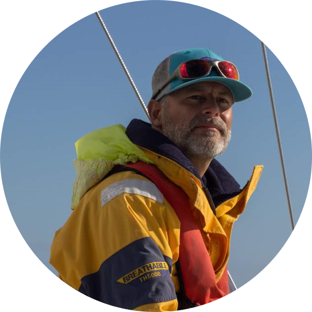

bivouac
bikepacking
trek
packrafting
Oser |
Démultiplier la vie |
Eveiller ses rêves |
| Jouer pleinement la vie et vivre intensément le présent | Saisir la possibilité offerte chaque matin d’inventer son existence, de décider de nouveaux projets | Eveillés, ils font s’éloigner les limites et transforment les obstacles en opportunités |
Si nulle occasion nous est donnée de nous mesurer à nous-même et de nous dépasser, il faut alors en créer, sans quoi nous rejoignons le grand nombre des destinées perdues
Plonger en pleine nature et vivre des expériences engageantes pour explorer ses chemins intérieurs
Passer par l’action et s’éloigner des dépendances superflues pour réveiller ses rêves, prendre conscience de ses multiples ressources
Des activités outdoor organisées pour accompagner vos démarches : reconversion professionnelle, création d'entreprise, lancement de projet, démarche personnelle ...
|
|
|
|
|||
| ... |
bivouac |
bikepacking |
trek |
packrafting |
... |
Révélateur de talents
(Coach professionnel - Consultant en entrprise)
|  | Les randonnées, les grands espaces et les bivouacs font partie de son éducation. Il passe ses jeunes années en Savoie où il saisit la moindre occasion pour s’échapper et rejoindre les sentiers. Cette flamme ne l’a jamais quitté.Au cours de ses expériences, il mesure l’importance du facteur humain. Il oriente alors l’évolution de ses compétences vers l’accompagnement, le conseil en entreprise, le développement personnel. Parallèlement il développe une forte conviction selon laquelle la nature offre un espace idéal pour que l’homme puisse pleinement se révéler, trouver ses essentiels, prendre ses équilibres. |
jmf@wakeup-conseil.com
01 84 20 71 39
06 33 96 09 57
Facebook LinkedIn Instagraml'état d'esprit qui guide les activités
| engagement | simplicité | découverte |
| dépassement de soi | sérieux sans se prendre au sérieux | désir d'explorer |
| goût du risque choisi | se contenter de l'essentiel, du minimum | capacité à se remettre en cause |